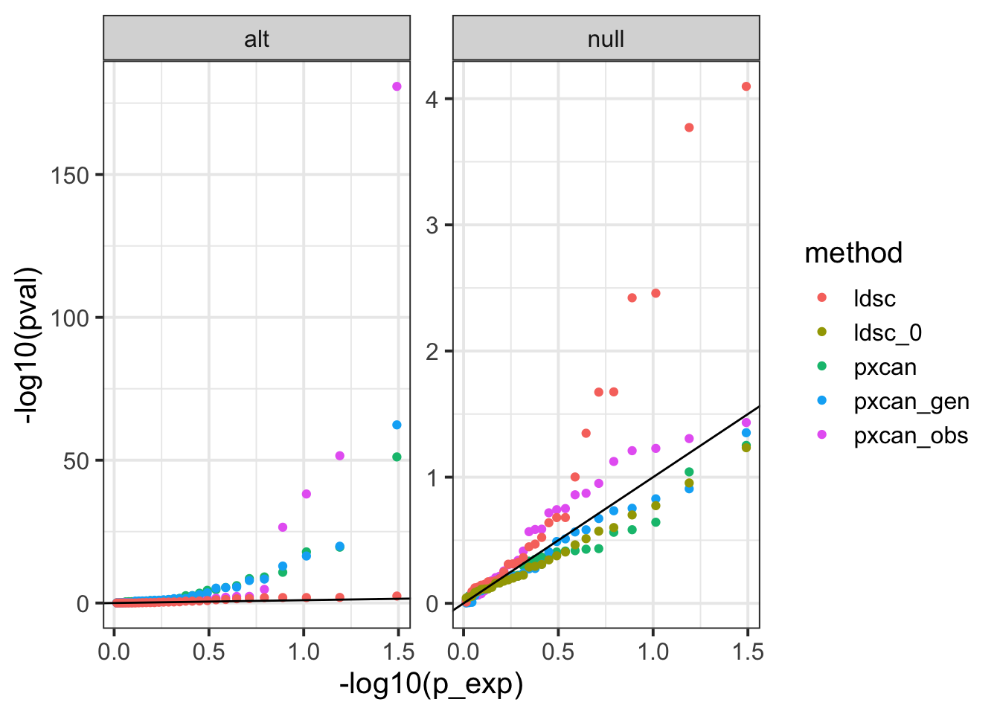
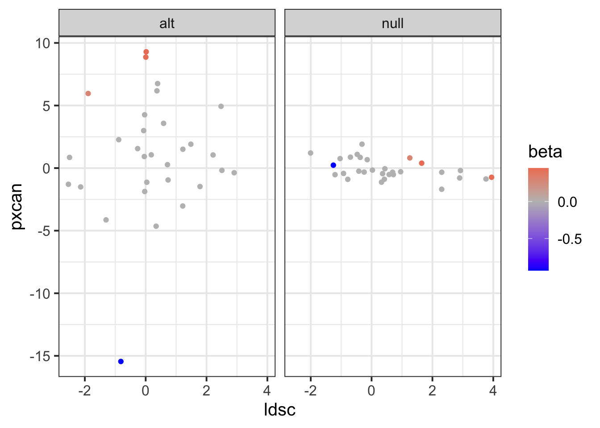

rm(list = ls())
library(ggplot2)
theme_set(theme_bw(base_size = 15))
source('https://gist.githubusercontent.com/liangyy/43912b3ecab5d10c89f9d4b2669871c9/raw/3ca651cfa53ffccb8422f432561138a46e93710f/my_ggplot_theme.R')
source('https://gist.githubusercontent.com/liangyy/489d1519dd45246caf4756d7722bfa25/raw/9bbb39b80243325b7930083063566fae4af85d48/fast_linear_regression')
library(dplyr)
options(stringsAsFactors = F)
library(patchwork)
library(data.table)
options(datatable.fread.datatable = F)
source('rlib.R')Here we perform a simulation study to compare the power of PrediXcan vs genetic correlation. We assume a mediation model underlying. \[\begin{aligned} M &= X B + E \\ Y &= M \beta + \epsilon \\ b_{jk} &\sim N(0, 1) \\ E_{ik} &\sim N(0, \sigma_k^2) \\ \beta_k &\sim \pi_0 \delta_0 + (1 - \pi_0) N(0, 1) \end{aligned}\] , where \(i\), \(j\), \(k\) index individuals, variants, and phenotypes respectively. \(\sigma_k^2\) is set so that the heritability of phenotype \(k\) is \(h^2\). We also simulate genotypes with the block-diagonal-like LD matrix.
The block shape LD matrix (\(J\)-by-\(J\) matrix) is simulated by the following procedure:
# get_blk <- function(total_size, fractions) {
# blks <- round(total_size * fractions)
# blks <- c(blks[-length(blks)], total_size - sum(blks[-length(blks)]))
# return(blks)
# }
# sim_fracs <- function(n) {
# fracs <- runif(n)
# fracs <- fracs / sum(fracs)
# return(fracs)
# }
sim_blk <- function(n_total, n_blk) {
if (n_total / n_blk < 3) {
blks <- rep(floor(n_total / n_blk), n_blk)
n_extra <- n_total - sum(blks)
blks[1 : n_extra] <- blks[1 : n_extra] + 1
return(blks)
}
blks <- 0
while(any(blks <= 0)) {
fracs <- runif(n_blk)
fracs <- fracs / sum(fracs)
blks <- floor(n_total * fracs)
# print(blks)
}
blks <- c(blks[-length(blks)], n_total - sum(blks[-length(blks)]))
return(blks)
}
simulate_ld <- function(J, rank_frac = 0.1, bin_n = 30, bin_rate = 0.5) {
r <- round(rank_frac * J)
n_blk <- rbinom(1, bin_n, bin_rate)
J_blks <- sim_blk(J, n_blk)
r_blks <- sim_blk(r, n_blk)
# Z <- matrix(rnorm(N * r), nrow = N)
Rs <- list()
for(i in 1 : n_blk) {
Rs[[i]] <- matrix(runif(J_blks[i] * r_blks[i], -0.5, 0.5), nrow = J_blks[i])
}
R <- do.call(Matrix::bdiag, Rs) %>% as.matrix
R <- R + matrix(runif(J * r, -0.1, 0.1), nrow = J)
LD <- R %*% t(R)
sd_diag_ld <- sqrt(diag(LD))
LD <- sweep(LD, 1, sd_diag_ld, '/')
LD <- sweep(LD, 2, sd_diag_ld, '/')
return(list(LD = LD, rank = r))
}
simulate_genotype <- function(N, LD) {
r <- LD$rank
kk <- eigen(LD$LD)
L <- kk$vectors[, 1 : r]
v <- kk$values[1 : r]
L <- sweep(L, 1, sqrt(v), '*')
Z <- matrix(rnorm(r * N), nrow = N)
return(Z %*% t(L))
}simulate_B <- function(genotypes, K) {
J <- ncol(genotypes)
B <- matrix(rnorm(J * K), ncol = K)
return(B)
}
simulate_mediators <- function(genotypes, K, B, h2 = 0.1) {
N <- nrow(genotypes)
M <- genotypes %*% B
gvar <- sum(apply(genotypes, 2, var))
evar <- gvar / h2 * (1 - h2)
M <- M + matrix(rnorm(N * K, sd = sqrt(evar)), nrow = N)
return(M)
}
simulate_beta <- function(K, pi0 = 0.9) {
draw_zero <- runif(K)
beta <- rnorm(K)
beta[draw_zero < pi0] = 0
return(beta)
}
simulate_phenotype <- function(genotypes, K, B, beta, mediators = NULL, h2_mediator = 0.1, pve_phenotype = 0.1, null = FALSE) {
N <- nrow(genotypes)
if (null) {
return(rnorm(N))
}
if (is.null(mediators)) {
M <- simulate_mediators(genotypes, K, B, h2 = h2_mediator)
} else {
M <- mediators
}
y <- M %*% beta
evar <- var(y) / pve_phenotype * (1 - pve_phenotype)
y <- y + rnorm(N, sd = sqrt(evar))
return(y)
}train_ridge_grm <- function(x, y, grm, thetas) {
bhat <- matrix(0, nrow = ncol(x), ncol = length(thetas))
for(i in 1 : length(thetas)) {
theta <- thetas[i]
M <- (1 - theta) * diag(nrow(x)) + theta * grm
bhat[, i] <- t(x) %*% solve(M, y) / nrow(x) * theta
}
return(bhat)
}
standardize <- function(v) {
return(apply(v, 2, function(x) { (x - mean(x)) / sd(x)}))
}
calc_GRM <- function(x) {
# x is required to be column-wise standardized
return(x %*% t(x) / ncol(x))
}
get_cv_partition <- function(ntotal, nfold) {
n <- floor(ntotal / nfold)
pool <- rep(1 : nfold, n)
if (length(pool) < ntotal) {
for(k in 1 : (ntotal - length(pool))) {
pool <- c(pool, k)
}
}
return(sample(pool))
}
eval_perf <- function(ypred, yobs) {
if (is.null(dim(ypred))) {
ypred <- as.matrix(ypred)
}
cor_sp <- cor(ypred, yobs, method = 'spearman')[, 1]
cor_p <- cor(ypred, yobs, method = 'pearson')[, 1]
r2 <- 1 - apply(ypred, 2, function(x) {sum((x - yobs) ^ 2) / sum(yobs ^ 2)})
return(data.frame(pearson = cor_p, spearman = cor_sp, R2 = r2))
}
train_ridge_cv <- function(x, y, grm = NULL, nfold = 5, nested_perf = FALSE,
thetas = c(0.01, 0.05, 0.1, 0.2, 0.3, 0.4,
0.5, 0.6, 0.7, 0.8, 0.9, 0.95),
criteria = 'spearman') {
x <- standardize(x)
y <- y - mean(y)
if (is.null(grm)) {
grm <- calc_GRM(x)
}
cv_idxs <- get_cv_partition(nrow(x), nfold)
res_bhat <- train_ridge_grm(x, y, grm, thetas)
ypred <- matrix(0, nrow = nrow(x), ncol = length(thetas))
for(i in 1 : nfold) {
train_inds <- cv_idxs != i
bhat <- train_ridge_grm(
x[train_inds, ],
y[train_inds],
grm[train_inds, train_inds],
thetas)
ypred[!train_inds, ] <- x[!train_inds, ] %*% bhat
}
cv_perf <- eval_perf(ypred, y)
cv_perf$theta <- thetas
bhat_opt <- res_bhat[, which.max(cv_perf[[criteria]])]
theta_opt <- cv_perf$theta[which.max(cv_perf[[criteria]])]
if (!nested_perf) {
return(list(bhat = res_bhat, cv_perf = cv_perf, bhat_opt = bhat_opt, theta_opt = theta_opt))
}
cv2_idxs <- get_cv_partition(nrow(x), nfold)
ypred <- rep(0, length(y))
for(i in 1 : nfold) {
train_inds <- cv2_idxs != i
res <- train_ridge_cv(
x[train_inds, ],
y[train_inds],
grm = grm[train_inds, train_inds],
nfold = nfold,
nested_perf = FALSE,
thetas = thetas
)
ypred[!train_inds] <- x[!train_inds, ] %*% res$bhat_opt
}
perf <- eval_perf(ypred, y)
return(list(bhat = res_bhat, cv_perf = cv_perf, bhat_opt = bhat_opt, theta_opt = theta_opt, perf = perf))
}
build_ridge_models <- function(genotypes, ys, ...) {
bhat <- matrix(0, nrow = ncol(genotypes), ncol = ncol(ys))
perf <- list()
for(i in 1 : ncol(ys)) {
res <- train_ridge_cv(genotypes, ys[, i], nested_perf = TRUE, ...)
bhat[, i] <- res$bhat_opt
perf[[length(perf) + 1]] <- res$perf
}
return(list(bhat = bhat, perf = do.call(rbind, perf)))
}
pxcan_assoc <- function(bhat, genotypes, y) {
pred_m <- genotypes %*% bhat
res <- fast_linear_regression(y, pred_m)
return(res)
}gen_grm_file <- function(genotypes, file_prefix) {
x <- standardize(genotypes)
grm <- x %*% t(x) / ncol(x)
df_v <- list()
for (i in 1 : nrow(genotypes)) {
for (j in 1 : i) {
df_v[[length(df_v) + 1]] <- data.frame(i = i, j = j, n = ncol(genotypes), v = grm[i, j])
}
}
df_v <- do.call(rbind, df_v)
gz1 <- gzfile(glue::glue('{file_prefix}.grm.gz'), 'w')
write.table(df_v, gz1, quote = F, col = F, row = F, sep = '\t')
close(gz1)
write.table(
data.frame(i = 1 : nrow(x), j = 1 : nrow(x)),
glue::glue('{file_prefix}.grm.id'),
quote = F, col = F, row = F, sep = '\t')
}
gen_pheno <- function(y1, y2, file_name) {
write.table(
data.frame(i = 1 : length(y1), j = 1 : length(y1), y1 = y1, y2 = y2),
file_name,
quote = F,
col = F,
row = F,
sep = '\t')
}
load_gcta_output <- function(fn) {
kk <- read.delim2(fn)
kk <- kk[ kk$Source == 'rG', ]
return(data.frame(rg = kk$Variance, se = kk$SE))
}
gen_cor_GCTA <- function(grm_prefix, mediator, y, file_prefix, path_to_gcta, wkdir = NULL) {
if (is.null(wkdir)) {
mydir <- tempdir()
} else {
mydir <- wkdir
}
gen_pheno(mediator, y, file_name = glue::glue('{mydir}/pheno.{file_prefix}'))
cmd_gcta <- glue::glue('{path_to_gcta} --reml-bivar --grm-gz {grm_prefix} --pheno {mydir}/pheno.{file_prefix} --out {mydir}/out.{file_prefix} > {mydir}/tmp.{file_prefix}.log 2>&1')
system(cmd_gcta)
return(load_gcta_output(glue::glue('{mydir}/out.{file_prefix}.hsq')))
}
gencor_assoc <- function(genotypes, mediators, y, path_to_gcta) {
mydir <- tempdir()
gen_grm_file(genotypes, file_prefix = glue::glue('{mydir}/gen_cor_GCTA'))
out <- list()
for (i in 1 : ncol(mediators)) {
res <- gen_cor_GCTA(
glue::glue('{mydir}/gen_cor_GCTA'),
mediators[, i],
y, i, path_to_gcta, wkdir = mydir)
out[[length(out) + 1]] <- res
}
out <- do.call(rbind, out)
out$rg <- as.numeric(out$rg)
out$se <- as.numeric(out$se)
return(out)
}ldsc_one_fit <- function(y, x) {
res <- lm(y ~ 1 + x, weights = 1 / x)
res <- summary(res)$coefficients[2, ]
return(data.frame(slope = res[1], se = res[2], pval = res[4]))
}
get_block <- function(ntotal, blk_size) {
nblk <- floor(ntotal / blk_size)
res <- c()
for (i in 1 : nblk) {
res <- c(res, rep(i, blk_size))
if (i <= ntotal - blk_size * nblk) {
res <- c(res, i)
}
}
return(res)
}
gen_cor_ldsc <- function(ldscores, z1, z2, n1, n2, block_size = NULL) {
y <- z1 * z2
x <- ldscores
res <- ldsc_one_fit(y, x)
if (is.null(block_size)) {
return(res)
}
block_idxs <- get_block(length(x), block_size)
nblock <- length(unique(block_idxs))
jk_res <- list()
for (i in unique(block_idxs)) {
x_ <- x[block_idxs != i]
y_ <- y[block_idxs != i]
res_ <- ldsc_one_fit(y_, x_)
jk_res[[length(jk_res) + 1]] <- res_
}
jk_res <- do.call(rbind, jk_res)
jk_est <- nblock * res$slope - (nblock - 1) / nblock * sum(jk_res$slope)
jk_var <- (nblock - 1) / nblock * sum((jk_est - jk_res$slope) ^ 2)
jk_se <- sqrt(jk_var)
return(res %>% mutate(jk_slope = jk_est, jk_se = jk_se))
}
calc_ldscore <- function(genotypes) {
x <- standardize(genotypes)
ld <- t(x) %*% x / nrow(genotypes)
ldscore <- rowSums(ld ^ 2)
return(ldscore)
}
ldsc_assoc <- function(genotypes1, y1, genotypes2, mediators2, block_size = 100) {
ldsc <- calc_ldscore(rbind(genotypes1, genotypes2))
gwas1 <- fast_linear_regression(y1, genotypes1)
z1 <- gwas1$bhat / gwas1$se
out <- list()
for(i in 1 : ncol(mediators2)) {
gwas2 <- fast_linear_regression(mediators2[, i], genotypes2)
z2 <- gwas2$bhat / gwas2$se
res <- gen_cor_ldsc(
ldsc, z1, z2, nrow(genotypes1), nrow(genotypes2),
block_size = block_size)
out[[length(out) + 1]] <- res
}
out <- do.call(rbind, out)
return(out)
}set.seed(2021)
nsnp <- 750
N <- 370
n2 <- 3000
h2_m <- 0.3
bin_n <- 30
bin_rate <- 0.6
ld <- simulate_ld(nsnp, bin_n = bin_n, bin_rate = bin_rate)
x <- simulate_genotype(N, ld)
x2 <- simulate_genotype(n2, ld)
K = 30
bb <- simulate_B(x, K)
beta <- simulate_beta(K, pi0 = 0.8)
m <- simulate_mediators(x, K, bb, h2 = h2_m)
m2 <- simulate_mediators(x2, K, bb, h2 = h2_m)
y <- simulate_phenotype(x, K, bb, beta, pve_phenotype = 0.5, mediators = m)
y2 <- simulate_phenotype(x2, K, bb, beta, pve_phenotype = 0.5, mediators = m2)
y_null <- simulate_phenotype(x, K, bb, beta, pve_phenotype = 0.5, mediators = m, null = TRUE)
y2_null <- simulate_phenotype(x2, K, bb, beta, pve_phenotype = 0.5, mediators = m2, null = TRUE)
res <- build_ridge_models(x, m)
res_pxcan_null <- pxcan_assoc(res$bhat, x2, as.numeric(y2_null))
res_pxcan <- pxcan_assoc(res$bhat, x2, as.numeric(y2))
res_pxcan_obs_null <- fast_linear_regression(as.numeric(y2_null), m2)
res_pxcan_obs <- fast_linear_regression(as.numeric(y2), m2)
m2_gen <- x2 %*% bb
res_pxcan_gen_null <- fast_linear_regression(as.numeric(y2_null), m2_gen)
res_pxcan_gen <- fast_linear_regression(as.numeric(y2), m2_gen)
res_ldsc_null <- ldsc_assoc(x2, as.numeric(y2_null), x, m, block_size = floor(ncol(x) / bin_n / bin_rate / 4))
res_ldsc_null_0 <- ldsc_assoc(x2, runif(n2), x, matrix(runif(N * K), nrow = N), block_size = floor(ncol(x) / bin_n / bin_rate / 4))
res_ldsc <- ldsc_assoc(x2, as.numeric(y2), x, m, block_size = floor(ncol(x) / bin_n / bin_rate / 4))
to_data_frame <- function(df) {
return(data.frame(pval = df$pval, zscore = df$bhat / df$se, est = df$bhat, idx = 1 : length(df$pval)))
}
to_data_frame2 <- function(df, n1, n2, m) {
return(data.frame(zscore = df$jk_slope / df$jk_se, est = df$jk_slope / sqrt(n1 * n2) * m, idx = 1 : length(df$pval)) %>% mutate(pval = exp(pnorm(abs(zscore), lower.tail = FALSE, log.p = TRUE)) * 2) %>% select(pval, zscore, est, idx))
}
tmp = rbind(
to_data_frame(res_pxcan) %>% mutate(method = 'pxcan', type = 'alt'),
to_data_frame(res_pxcan_null) %>% mutate(method = 'pxcan', type = 'null'),
to_data_frame(res_pxcan_obs) %>% mutate(method = 'pxcan_obs', type = 'alt'),
to_data_frame(res_pxcan_obs_null) %>% mutate(method = 'pxcan_obs', type = 'null'),
to_data_frame(res_pxcan_gen) %>% mutate(method = 'pxcan_gen', type = 'alt'),
to_data_frame(res_pxcan_gen_null) %>% mutate(method = 'pxcan_gen', type = 'null'),
to_data_frame2(res_ldsc, N, n2, nsnp) %>% mutate(method = 'ldsc', type = 'alt'),
to_data_frame2(res_ldsc_null, N, n2, nsnp) %>% mutate(method = 'ldsc', type = 'null'),
to_data_frame2(res_ldsc_null_0, N, n2, nsnp) %>% mutate(method = 'ldsc_0', type = 'null')) %>%
left_join(data.frame(idx = 1 : K, beta = beta), by = 'idx')
tmp %>%
group_by(method, type) %>%
mutate(p_exp = rank(pval) / (n() + 1)) %>%
# filter(method %in% c('ldsc', 'ldsc_0')) %>%
ggplot() +
geom_point(aes(x = -log10(p_exp), y = -log10(pval), color = method)) +
facet_wrap(~type, scales = 'free_y') +
geom_abline(slope = 1, intercept = 0)
tmp %>% reshape2::dcast(idx + type + beta ~ method, value.var = 'zscore') %>%
ggplot() +
geom_point(aes(x = ldsc, y = pxcan, color = beta)) +
facet_wrap(~type) +
scale_color_gradient2(mid = 'gray', high = 'red', low = 'blue', midpoint = 0)